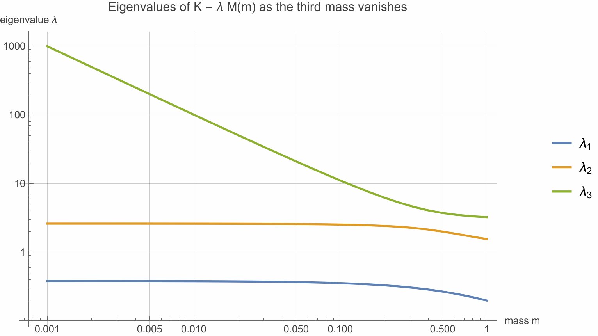

Three masses on springs. Shrink the third mass to zero — a perfectly
reasonable physical limit — and one vibration frequency doesn't just get large, it
escapes to infinity, while the textbook recipe "just compute the eigenvalues of
\(M^{-1}K\)" divides by zero and dies. Where did that eigenvalue go, and is there a
decomposition that sees it? The generalized Schur theorem says yes: any pair of
square matrices can be simultaneously triangularized by two unitary changes of
basis, and the eigenvalues — finite and infinite — sit plainly on the two diagonals.
By the end you'll know why two rotations are needed instead of one, why the eigenvalue is
really a ratio, and why every serious eigenvalue library (LAPACK, MATLAB's
eig(A,B)) computes this and never inverts \(B\).
Here's our running example. Three carts on a frictionless rail, connected by springs:
Newton's second law for the displacement vector \(x(t)\) reads \(M\ddot{x} = -Kx\), with mass and stiffness matrices
Looking for solutions \(x(t) = v\,e^{i\omega t}\) turns the differential equation into the generalized eigenvalue problem
Now the naive move every engineer makes first: multiply through by \(M^{-1}\) and compute the ordinary eigenvalues of \(M^{-1}K\). Fine while \(m>0\). But take the honest physical limit \(m \to 0\) — a massless node, which shows up constantly in real models (rigid links, algebraic constraints in circuits, descriptor systems) — and \(M^{-1}\) stops existing. Predict what happens to the eigenvalues before reading on.
No — and this is the surprise. Two eigenvalues converge to the finite values \((3\pm\sqrt5)/2 \approx 0.382\) and \(2.618\), but the third behaves like \(1/m\) and runs off to infinity. The characteristic polynomial \(\det(K-\lambda M)\) drops degree from 3 to 2, so one root literally leaves the complex plane. Any method built on \(M^{-1}K\) is blind to this. The generalized Schur theorem is the fix: it treats the infinite eigenvalue as a first-class citizen — §5 shows exactly where it hides.
The question this section answers: the ordinary Schur theorem triangularizes one matrix with one unitary change of basis. Why should two matrices need two?
Recall the ordinary Schur theorem: for any square \(A\in\mathbb{C}^{n\times n}\) there is a unitary \(Q\) (i.e. \(Q^{*}Q = I\)) with
But a generalized eigenvalue problem \(Av = \lambda Bv\) has matrices on both sides, and it transforms differently. Change basis on the right, \(v = Zw\), and multiply the whole equation on the left by \(Q^{*}\):
Notice \(Q\) and \(Z\) are independent: the left multiplier re-expresses the equation, the right one re-expresses the unknown. (Setting \(Q = Z\) would force the pair \((A,B)\) to be simultaneously similar to triangular form — too much to ask, since even two commuting matrices only just manage it.) With two free rotations, can we always make both \(S\) and \(T\) upper triangular?
The question this section answers: what exactly is guaranteed, and what do the two diagonals tell us?
with \(S\) and \(T\) both upper triangular. The eigenvalues of the pencil — the roots of \(\det(A-\lambda B)=0\) — are the diagonal ratios
Three readings of that last line, each one load-bearing:
If \(A\) and \(B\) are real, you may stay real: there are real orthogonal \(Q, Z\) with \(S\) quasi-triangular (1×1 and 2×2 diagonal blocks, one per real eigenvalue or conjugate pair) and \(T\) triangular — the same trade the real Schur form makes to avoid complex arithmetic.
The question this section answers: existence proofs for decompositions are usually inductive — what's the inductive step here, and why does it go through when "simultaneous similarity" fails?
The proof is the same engine as ordinary Schur, with one clever substitution. Three moves:
The eigenvalue formula is then a free corollary: \(\det(A - \lambda B) = \det(QS Z^{*} - \lambda Q T Z^{*}) = \det(S-\lambda T)\) (unitary determinants have modulus 1 and cancel), and a triangular determinant is the diagonal product: \(\det(S-\lambda T) = \prod_i (s_{ii} - \lambda\, t_{ii})\), whose roots are exactly \(s_{ii}/t_{ii}\).
Yes. Just as for ordinary Schur, the eigenvalues can be made to appear in
any prescribed order on the diagonal — one can always swap adjacent diagonal pairs
by a small two-sided unitary rotation (this is "reordering," LAPACK's
XTGEXC). It matters enormously in practice: computing stable deflating
subspaces in control theory is exactly "reorder so the stable eigenvalues come first, then
read off the leading columns of \(Z\)."
The question this section answers: what do \(S\) and \(T\) actually look like on real numbers, and where exactly does the infinite eigenvalue sit?
First a clean finite check. Take \(A\) and \(B\) as below; the generalized Schur decomposition (computed exactly as LAPACK would, then rounded to 4 digits) gives:
(the \(*\)'s are nonzero upper entries that don't matter for eigenvalues). The diagonal ratios \(1.1030/1.5336\), \(2.0000/1.0000\), \(3.6265/1.3042\) are
matching a direct generalized eigenvalue solve to all shown digits — and the residuals \(\lVert QSZ^{*} - A\rVert, \lVert QTZ^{*} - B\rVert \approx 10^{-15}\), i.e. the decomposition is exact to machine precision without ever forming \(B^{-1}\).
Now the payoff for our mass–spring chain. Set \(m = 0\): \(M(0)\) is singular, so \(M^{-1}K\) does not exist. But QZ doesn't blink — the decomposition of \((K, M(0))\) returns
There it is: the runaway eigenvalue, sitting on the diagonal as a zero \(t_{33}\). The characteristic polynomial confirms the story — \(\det(K - \lambda M(0))\) has degree 2, so exactly two finite roots exist; the third left for infinity, and the Schur form is the map that shows you the door it left through.

wolframscript -f verify.wl)(* exact-input, machine-precision decomposition — the same arithmetic LAPACK does *)
A = {{2,1,0},{1,3,1},{0,1,2}}; B = {{1,0,0},{0,2,0},{0,0,1}};
{q,s,p,t} = SchurDecomposition[N[{A,B}]];
Diagonal[s]/Diagonal[t] (* -> {0.719224, 2., 2.78078} *)
Norm[q.s.ConjugateTranspose[p] - A] (* -> 1.24 10^-15 : exact to machine precision *)
K = {{2,-1,0},{-1,2,-1},{0,-1,1}}; M0 = DiagonalMatrix[{1,1,0}];
{q2,s2,p2,t2} = SchurDecomposition[N[{K,M0}]];
Diagonal[t2] (* -> {0.885131, 0.798872, 0.} a genuine zero *)
Eigenvalues[N[{K,M0}]] (* -> {Infinity, 2.61803, 0.381966} *)
Exponent[Det[K - lam M0], lam] (* -> 2 : the cubic dropped a degree *)The question this section answers: the theorem says the triangular form exists — why is it also the right thing to compute?
You could object: "my \(B\) is invertible, so \(B^{-1}A\) is fine." Numerically, it often isn't. Inverting \(B\) costs you accuracy in three ways: \(B^{-1}\) amplifies rounding errors by the condition number \(\kappa(B)\); \(B^{-1}A\) is generally non-symmetric even when \(A, B\) are symmetric (destroying structure that cheaper algorithms exploit); and the whole construction is undefined at exactly the singular pencils we care about.
The QZ algorithm (Moler & Stewart, 1973 — the "QZ" names the two matrices) computes the generalized Schur form directly:
python3 mini_qz.py)from math import hypot
A = [[2.,1.,0.],[1.,3.,1.],[0.,1.,2.]] # the worked example, pure stdlib
B = [[1.,0.,0.],[0.,2.,0.],[0.,0.,1.]]; n = 3
def giv(a, b): # Givens rotation zeroing b against pivot a
r = hypot(a, b); return (1., 0.) if r == 0. else (a/r, b/r)
def left(M, i, c, s): # rotate rows i-1, i (this builds Q)
for k in range(n):
x, y = M[i-1][k], M[i][k]
M[i-1][k], M[i][k] = c*x + s*y, -s*x + c*y
def right(M, p, q, c, s): # rotate cols p, q (this builds Z)
for k in range(n):
x, y = M[k][p], M[k][q]
M[k][p], M[k][q] = c*x + s*y, -s*x + c*y
def sweep():
for j in range(n): # 1) left rotations: re-triangularize B,
for i in range(n-1, j, -1): # apply the same to A
c, s = giv(B[i-1][j], B[i][j]); left(B, i, c, s); left(A, i, c, s)
for i in range(n-1, 0, -1): # 2) right rotations: zero A's subdiagonal,
for j in range(i-1, -1, -1): # apply the same to B
c, s = giv(A[i][i], A[i][j]); s = -s
right(A, j, i, c, s); right(B, j, i, c, s)
def fill(M): return max(abs(M[i][j]) for i in range(1, n) for j in range(i))
for k in range(1, 41):
sweep() # refill of B -> 0 exactly when BOTH triangular
lams = sorted(A[i][i]/B[i][i] for i in range(n)) # ratios — B never inverted
$ python3 mini_qz.py ← real output
sweep fill in B
1 7.303e-01 4 1.263e-01 16 2.820e-03 32 1.446e-05
2 4.971e-01 8 3.889e-02 20 7.546e-04 36 3.869e-06
3 1.811e-01 12 1.053e-02 24 2.019e-04 40 1.035e-06
lambda_i = s_ii / t_ii : ['0.719224', '2.000000', '2.780776']
expected (Wolfram) : ['0.719224', '2.000000', '2.780776'] ✓ all 6 digitsThe decay column is the theorem at work: the fill shrinks by a factor \(\approx 0.27\) per sweep — precisely the ratios \(\lambda_i/\lambda_{i+1}\) of consecutive eigenvalue magnitudes (\(0.72/2 \approx 0.36\), \(2/2.78 \approx 0.72\)… the effective rate is their geometric pattern) — the same linear-convergence story as unshifted QR, which is why real QZ adds shifts to converge quadratically. But the structure is all here: two-sided rotations only, \(B\) never inverted, eigenvalues as diagonal ratios.
Because every transformation is unitary, the algorithm is backward stable: the computed \(S, T\) are exactly the Schur form of a nearby pair \((A+\Delta A,\ B+\Delta B)\) with \(\lVert\Delta A\rVert/\lVert A\rVert\) at the rounding level. Compare with \(B^{-1}A\), whose errors scale with \(\kappa(B)\) — for the nearly singular \(B\) of Figure 3, that's the difference between a right answer and garbage.
QZ keeps essentially full machine precision (~16 digits; the error is backward-stable in \(A\) and \(B\) themselves). The \(B^{-1}A\) route multiplies entries by \(10^{12}\), rounding first and amplifying later — you can lose up to ~12 of 16 digits before the eigenvalue solve even starts. Near-singular \(B\) is not an edge case in applications; it is the application (stiff constraints, small masses, parasitic capacitances).
One more superpower: reordering. The diagonal pairs can be permuted into any
order by further two-sided rotations. Reorder so all eigenvalues inside the unit circle come
first, and the leading columns of \(Z\) span the stable deflating subspace — the
object you need to solve Riccati equations in control and to separate fast/slow dynamics.
This is why LAPACK's driver xGGES (and MATLAB's qz(A,B,'real') /
ordeig workflow) exposes reordering as a first-class option.
The generalized Schur theorem sits in a small hierarchy of "canonical forms for pencils," and knowing the neighbors tells you what it can and can't say:
| Tool | What it gives | Cost / caveat |
|---|---|---|
| Schur decomposition (\(B=I\)) | \(Q^{*}AQ = T\) triangular; eigenvalues on the diagonal | one matrix only |
| Generalized Schur (QZ) | \(Q^{*}AZ=S\), \(Q^{*}BZ=T\) triangular; ratios \(s_{ii}/t_{ii}\), infinite eigenvalues included; backward stable | not a similarity — sub-diagonal eigenvector info lives in \(Z\), and fully singular blocks need more |
| Weierstrass canonical form | regular pencils: block diagonal \(\operatorname{diag}(J, N)\) — Jordan blocks for finite, nilpotent blocks for infinite eigenvalues | requires invertible (non-unitary) transforms; numerically unsafe |
| Kronecker canonical form | singular pencils (also rectangular): adds singular blocks describing the part where \(\det(A-\lambda B)\equiv 0\) | the full structural story, but discontinuous under perturbation — computed via stabilized staircase forms that start with QZ |
The pattern to remember: unitary transformations for numbers, general invertible transformations for structure. The generalized Schur form is the finest decomposition of a pencil you can reach while staying unitary — everything finer (Jordan/Weierstrass/ Kronecker) reveals more structure but sacrifices numerical safety, which is why practice starts at QZ and ventures beyond it only through carefully stabilized variants.
And the opening loop is closed: the mass that vanished didn't destroy an eigenvalue — it sent it to infinity, where the ratio \(s_{ii}/t_{ii}\) was waiting to receive it.